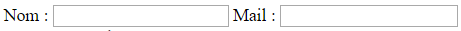
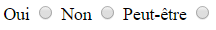
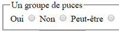
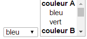

Avant toutes choses, il est important de poser cette première idée : le langage HTML (HyperText Markup Language) est un langage de description de données et NON de programmation !! Ce langage permet donc de structurer des données tel que du texte mais également des données vidéo, audio... . C'est la base du développement d'un site Web qui donne son SENS. En parallèle, il existe un autre langage, le CSS (Cascading Style Sheets) qui est un langage utilisé pour la forme, nous reviendrons sur ce langage plus tard, chaque chose en son temps (pour une bref introduction du CSS, cliquer ici .
Tout document HTML DOIT être unique !
Règle d'or d'écriture : bien incrémenter son texte pour lisibilité, et pour soi, et pour les copains amenés potentiellement à relire votre HTML par la suite.
Le point de départ du langage HTML repose sur l'utilisation de balises (d'où son nom "Markup Language"), les balises seront délimitées par des chevrons : < ... >. Il existe plusieurs types de balises :
Si l'on se focalise sur les deux premières balises, on définit un block. Ce block est donc délimité par une balise ouvrante et une balise fermante. Toutes les balises qui se trouvent entre ces 2 balises sont de enfants de cette balise. Il n'y a pas de délimitation au nombre d'imbrications de balises dans une balise.
< "balise ouvrante" >
enfants de la balise = contenu
< "/balise fermante" >
A la notion de balise qui est incontournable, vous l'aurez compris, il faut ajouter les notions d'attibut et de valeur de ces attributs. Comme un exemple vaut mieux que beaucoup de mots, le voici : <a href = " URL du lien " > histoire des coucous </a>. Pour mettre des mots clairs sur cet exemple, décomposons!
" -blank " est la valeur de notre attribut href qui définit notre balise a. L'attribut permet donc de définir une balise et ce sous la forme : nom = " ... ". Notons qu'une balise peut être définie par plusieurs attributs. Encore un peu de patience pour comprendre la fonction de cet exemple, ça viendra.
Tout document HTML commence par une balise indispensable permettant de définir sous quelle version HTML on travaille < ! doctype html >
Suite, à cette balise, l'ensemble du texte commence par < / html > et se terminera par < / html >
Ensuite, le texte HTML se divise en 2 parties :
Voici comment se présente le corps du document :
< ! doctype html >
< html >
< head >
< charset = "utf8" >
< title > Titre du document < /title >
< /head >
< body >
< corps du texte >
< /body >
< /html >
NB : la balise HTML contient donc 2 enfants qui sont la balise Head et la balise Body.
En HTML, il y a au maximum 6 niveaux de titres pour organiser sémantiquement un texte :
Balise de paragraphe <p> zone de texte < /p >. Tout le texte contenu entre ces balises s'affichera en ligne et s'ajuste automatiquement à la taille de la fenêtre.
Balise de italique <em> zone de texte ou mot < /em >.
Balise d'écriture en gras <strong> zone de texte ou mot < /strong >.
Balise de surlignage <mark> zone de texte ou mot < /mark >.
NB : les 3 dernières balises sont uniquement pour mettre en valeur la sémantique !! pas de mise forme !!
NB2 : Dans toute règle il y a une exception: la balise < pre >. Cette balise est du type block et est la seule à avoir un impact sur la présentation, ce qui sous-entend implicitement que cette présentation a du sens!
Il est fortement déconseillé de les utiliser pas car elles posent des problèmes pour les logiciels de lecture d'HTML pour les personnes non-voyantes mais aussi pour les robots Google ou Bing des moteurs de recherche
Il y a deux types de listes très utilisées et 1 type moins utilisé :
La liste ordonnée est utilisée pour classifier des éléments. Elle permet de numéroter.
Voici comment la baliser :
<ol>
<li> première ligne </li>
<li> deuxième ligne </li>
<li> x lignes </li>
</ol>
La liste désordonnée est utilisée pour lister des éléments en les puçant.
Voici comment la baliser :
<ul>
<li> première ligne </li>
<li> deuxième ligne </li>
<li> x lignes </li>
</ul>
La liste de définition pour allier définition et terme défini
Voici comment la baliser :
<dl>
<dt> terme1 </dt>
<dd> définition </dd>
</dl>
Pour les besoins de rédaction, il se peut qu'on ait besoin d'écrire certains caractères comme < > ou &. On appelle cela l'échappement qui correspond à des normes d'écriture qui permettent au texte HTML de comprendre que des caractères sont à lire "normalement" et non pas pour définir un code précis. Ainsi, certaines synthaxes sont à connaitre :
Si on schématise une page web, on peut la diviser en 5 entités :
Chaque zone, contenue dans le body, possède sa balise;
Il n'y a pas de limitation au nombre de chaque balise utilisée, tant qu'il y a du sens! De plus, rien n'empêche d'imbriquer un <aside> par exemple dans un <article> tant que l'information secondaire appartient à l'article et non au site!
Les liens permettent de parcourir un texte de manière non-linéraire. En HTML, on utilise les balises < a > et < /a > Revenons sur notre exemple précédent, l'élément <a> : <a href = " URL du lien " > histoire des coucous </a>. Cet élément, également appelé ancre, permet de définir un hyperlien vers un endroit différent situé sur la même page ou vers une autre page sur le Web. l'URL (Uniform Resource Locator) désigne une chaîne de caractères utilisée pour définir un chemin soit vers un endroit précis du Web ou sur un endroit précis de votre machine. Dans notre exemple, on trouve l'attribut href. Cet attribut permet d'indiquer la cible du lien. Quelques points importants :
Via cette balise d'ancrage, on va pouvoir construire un sommaire. Cette construction se fait pas à pas, le tout est de bien indiquer les url des differents liens, les indentations pour la lisiblité, et les bonnes balises. L'ensemble sera borné par les balises < nav > ... < / nav >?
< nav >
< ol >
< li >
<a href = " # licorne" > la vie des licornes </a>
< /li >
< li >
<a href = " page.html # lapin" > Vive Pâques !! </a>
< /li >
< ol >
< /nav >
...
< section id = "licorne" >
... (corps de l'article)
< /section >
< section id = "lapin" >
... (corps de l'article)
< /section >
NB : l'attribut id DOIT être unique dans tout un document HTML, on appelle ça une contrainte. L'id doit être identifié de manière univoque.
NB2 : l'utilisation du dièse (#) avant un nom corrspond à un fragment d'URL, ce qui indique une cible interne au document (un ID).
Il existe un autre attribut que l'on peut ajouter à notre balise < a > : il s'agit de l'attribut target. Target permet de définir l'ouvrerture de l'URL entrée en valeur dans l'attribut href. On peut trouver 4 valeurs pour l'attribut target ;
Voici ce que ça donne en texte HTML :
< a href = "URL"
target = "_blank" > Vive Paques < / a >
On va pouvoir insérer des images dans un texte HTML en utilsant une nouvelle balise : < img >
Pour son utilisation, il faut obligatoirement utiliser 2 attibuts appelés src et alt.
Voici le texte pour importer une image :
< img src = "URL de l'image"
alt = "texte à afficher si l'image ne s'affiche pas" >
En HTML, un tableau est un ensemble de lignes qui contiennent des cellules. Autrement dit, il n'y aura JAMAIS de colonne. Chaque élément d'un tableau possède sa balise :
Pour exemple, voici un tableau (2 lignes avec 2 cellules par ligne) :
| A | B |
| C | D |
Et voici le texte HTML associé :
< table >
< tr >
< td > A < /td >
< td > B < /td >
< /tr >
< tr >
< td > C < /td >
< td > D < /td >
< /tr >
< /table >
Il est donc TRES important de respecter l'indentation car sinon le tableau devient très compliqué à déchiffrer, surtout si on rajoute ultérieurement d'autres lignes ou cellules;
Il est également pssible de définir des entêtes et des pied de tableaux. On aura alors recours à trois autres balises :
Voici le texte HTML associé aux entêtes et pied de tableau:
< table >
< thead >
< tr >
< th > nom < /th >
< th > prénom < /th >
</tr >
< /thead >
< tfoot >
< tr >
< th > ... < /th >
< th > ... < /th >
</tr >
< /tfoot >
< / table >
Et voici le résultat final avec entêtes et pied de tableau
| nom | prénom |
|---|---|
| aa | bb |
| A | B |
| C | D |
Sachant que par convention, on ajoutera le tableau de < tr > entre la balise fermante de tfoot et la balise fermante de table.
En HTML on peut également déterminer qu'une cellule occupe un espace différent en ajoutant des attributs rowspan pour le nombre de lignes et colspan pour le nombre d'épaisseur.
| A | A | A | A | ||
| C | C | C | C | ||
| O | O | O | O | ||
ce qui s'écrit:
<table>
<tr>
< td rowspan = "2"
colspan = "2" > A </td >
<td> A </td>
<td> A </td>
<td> A </td>
</tr>
<tr>
<td> C </td>
<td> C </td>
<td> C </td>
<td> C </td>
</tr>
</table>
On peut insérer une légende dans un tableau. On ajoute alors la balise < caption > ... < /caption >. Cette commande se place uniquement en première commande soit juste après la balise ouvrante < table >
<table>
<caption> ma légende </caption>
< tr >
< td > AAAA < /td >
< td > BBBB < /td >
< /tr >
< tr >
< td > CCCC < /td >
< td > DDDD < /td >
< /tr >
< /table >
| AAAA | BBBB |
| CCCC | DDDD |
Dernière info sur les tableaux qui est obselète mais qu'on se doit de connaitre au cas où on la rencontre... la balise <colgroup>. Pour plus de précisions, click click click . Dans l'absolu, çela permet de définir un groupe de colonnes pour regrouper leurs informations dans un but sémantique MAIS ça ne sert plus à rien!
<table>
<colgroup>
<col/>
<col span = "2" />
</colgroup>
...
</table>
Un formulaire va permettre à l'utilisateur de saisir des données qui seront ensuite envoyées au serveur pour leur traitement. Un formulaire peut contenir des champs de saisies explicites, des boutons permettant par exemple l'envoi du formulaire, des choix multiples à cocher et/ou des menus déroulants. Tout d'abord, afin de délimiter le block formulaire, on utilise la balise <form> ... </form>. Cette balise contient 2 attributs :
<form action = "URL du serveur vers lequel sera envoyé les données"
methode = "get ou post" >
...
</form>
Attaquons maintenant les différents éléments du formulaire.
Afin de mettre des champs de saisie, il existe une balise <input/>. Cette balise auto fermante va pouvoir prendre plusieurs attributs. Le premier attribut est type qui va permettre de renseigner la nature de la saisie. Il va donc prendre comme valeur : text, mail, date. Le second attribut va permettre de renvoyer une information au serveur, qui peut être différent de la réponse saisie par l'utilisateur (c'est à dire définie par le programmeur). Ce sera l'attribut name = "user-name par exemple". Un autre attribut sera id = "name par exemple" qui va permettre de faire le lien entre le input et le nom qui lui sera donné via la balise <label>.
Voici donc une nouvelle balise : <label> </label>. Grâce à elle, on peut nommé notre champ de saisie. Elle prend comme attribut for, qui aura pour valeur la même valeur du id de l'input.
Voici le code HTML pour des champs et leur nom pour ce résultat :

<body>
<form action = "" methode = "post"> <!-- dans l'attribut action, on doit écrire l'URL vers laquelle on enverra les données -->
<label for = "name" > Nom : </label>
<input type = "text" name = "user-name" id = "name" />
<label for = "mail" > Mail : <user-mail" id = "mail" />
<input type = "mail" name = "user-mail" id = "mail" />
</form>
</body>
NB : si on met le label après le input, le nom s'affichera après le champ...
A la place de la balise <input>, on peut mettre une balise <textarea> qui va permettre d'éditer du texte sur plusieurs lignes.
<textarea type = "text" name = "user-commentaire" id = "commentaire" > </textarea>
Comment mettre un bouton, petite chose très pratique pour valider un formulaire par exemple!? Simple, il y a une balise <button> ... </button>, qui prendra comme attribut type = "submit" pour envoyer un formulaire, ou alors type = "reset" pour effacer tous les champs si erreur de saisie par l'utilisateur. Ce qui donne :
<button type = "submit"> Destruction massive de votre commentaire !!! </button>
<button type = "reset"> reset </button>
NB : on peut mettre plusieurs boutons submit pour envoyer à des serveurs différents.
Passons maintenant aux cases à cocher. Il y a 2 possibilités selon ce que l'on veut :
Voici le code HTML pour les cases à cocher :
<label for = "choix" > Cochez </label>
<input type = "checkbox" />
Voici le code HTML pour les ronds avec choix mutuellement exclusifs ayant pour résultat : 
<label for = "oui" > Oui </label>
<input type = "radio" name = " choix" id = "oui" value = "oui" />
<label for = "non" > Non </label>
<input type = "radio" name = " choix" id = "non" value = "non" />
<label for = "peut-etre" > Peut-être </label>
<input type = "radio" name = " choix" id = "peut-etre" value = "peut-etre" />
Notons qu'on pourra ajouter une légende à nos puces via la balise <legend>, les organiser via la balise <fieldset>. Voici l'ensemble du code, testez-le :
<fieldset>
<legend> Un groupe de puces </legend>
<label for = "oui" > Oui </label>
<input type = "radio" name = " choix" id = "oui" value = "oui" />
<label for = "non" > Non </label>
<input type = "radio" name = " choix" id = "non" value = "non" />
<label for = "peut-etre" > Peut-être </label>
<input type = "radio" name = " choix" id = "peut-etre" value = "peut-etre" />
</fieldset>

Dernier point, les menus déroulants. Devinez quoi... il existe aussi une balise pour les menus déroulants, qui sera <select>! Elle prendra un attribut qui est name = "...". Dans cette balise on imbriquera une autre balise qui sera <option>, on aura une <option> par choix. Cette dernière aura 1 attribut : value = "...". Enfin, on pourra aussi regrouper des options via la balise <optgroup> qui prendra pour attribut label = "...". Voici l'ensemble du code sur les menus déroulants  :
<body>
<form action = "" methode = "post"> <!-- dans l'attribut action, on doit écrire l'URL vers laquelle on enverra les données -->
<select name = "couleur">
<option value = "bleu"> bleu </option> <!-- menu déroulant simple-->
<option value = "vert"> vert </option>
<option value = "rouge"> rouge </option>
<option value = "bleu1"> bleu1 </option>
<option value = "vert1"> vert1 </option>
<option value = "rouge1"> rouge1 </option>
</select>
<select name = "couleur" multiple< <!-- attribut name renvoie sa valeur au serveur -->
<optgroup label = "couleur A"<
<option value = "bleu"> bleu </option> <!-- Menu choix multiple avec regroupement des options-->
<option value = "vert"> vert </option>
</optgroup>
<optgroup label = "couleur B">
<option value = "rouge"> rouge </option>
<option value = "bleu1"> bleu1 </optionv
</optgroup>
</select>
</form>
</body>
Un dernier point concernant un attribut très utile, qui va permettre une obligation de remplir un champ : l'attribut required. Cet attribut ne prendra aucune valeur. Ainsi, lorsque l'utilisateur voudra valider son formulaire et qu'il n'a pas renseigné un champ required, un message apparaitra (selon navigateur, Chrome : "Veuillez renseigner ce champ").
<label for = "name" > Nom : </label>
<input type = "text" name = "user-name" id = "name" required />
Voila pour la part HTML, donc sémantique !! On se revoit dans la partie CSS pour rendre notre formulaire au top de sa présentation !